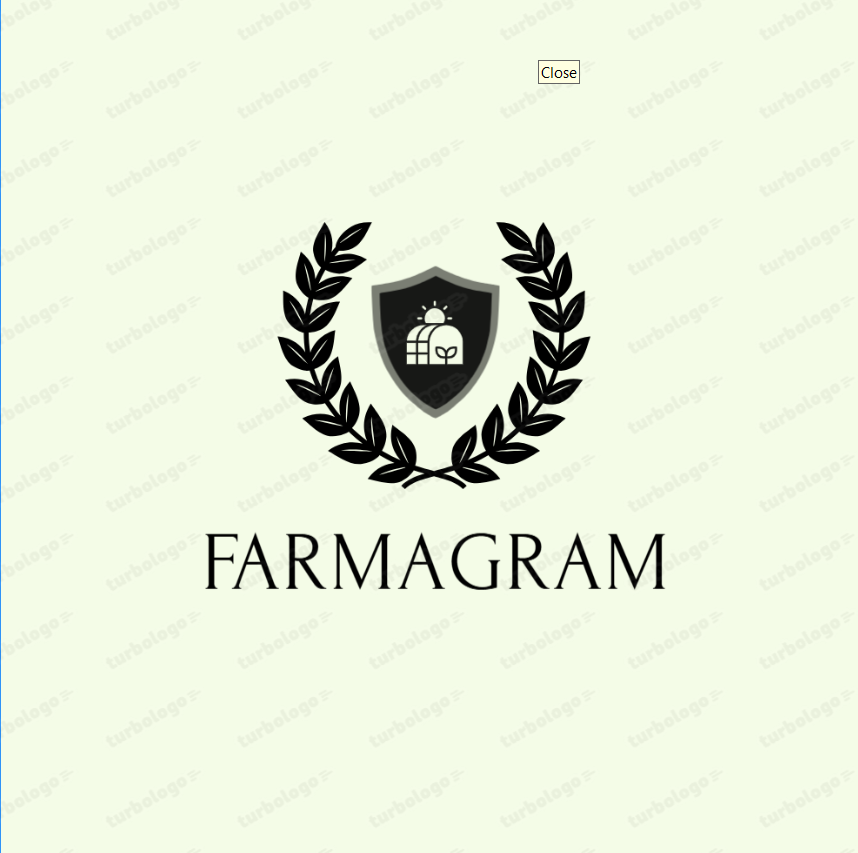

FarmaGram

Welcome to FarmaGram
Connecting farmers directly with consumers for a fair and sustainable future.
Direct Marketplace
Sell your produce directly to buyers without middlemen.
Secure Transactions
Manage payments easily and securely within the platform.
Real-Time Updates
Stay updated with real-time inventory and market trends.
Easy Navigation
User-friendly interface designed for farmers and consumers alike.